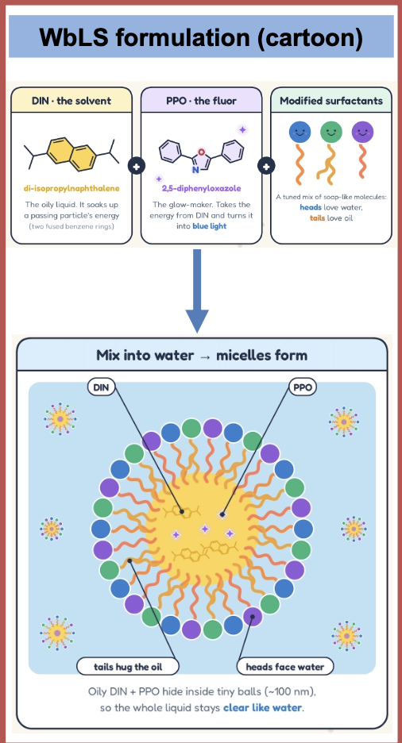
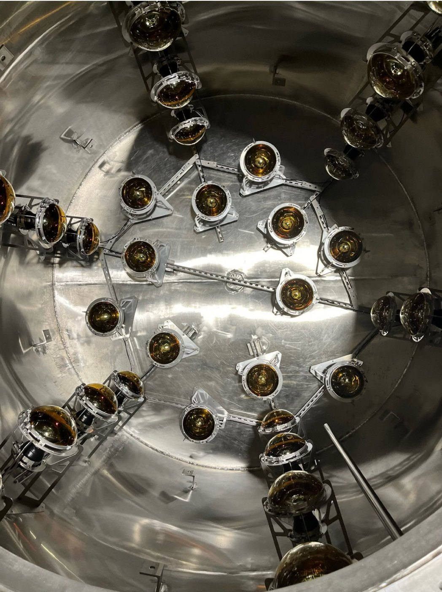

The BNL 30-ton WbLS demonstrator at Brookhaven National Laboratory (BNL) is a tonne-scale test bed for water-based liquid scintillator (WbLS): a mixture of water and a small fraction of organic liquid scintillator that produces both Cherenkov and scintillation light. The demonstrator is used to study how WbLS behaves at large scale over long periods — its optical stability, its light yield, and the handling and circulation of the liquid.
Light in the tank is seen by photomultiplier tubes (PMTs) mounted on the side wall and on the bottom of the tank. Cosmic-ray muons crossing the detector are selected with plastic-scintillator trigger paddles; because these muons deposit a similar amount of energy every day, the light they produce is a direct monitor of the detector's light yield.
What this page monitors
- Light yield. For every day of muon data, the summed charge of the Side PMTs and of the Bottom PMTs (without the central PMT) is histogrammed and fitted with a Landau function. The most probable value (MPV) is plotted versus date; a straight line fitted to each stable period gives the trend in PE/day.
- Calibration. Dedicated source-calibration runs measure each PMT's single photo-electron (SPE) response, so changes in PMT gain can be separated from changes in the liquid.
The page is rebuilt automatically after each run is processed.
Schematic side view, not to scale.
WbLS composition
Water-based liquid scintillator is mostly ultra-pure water with a small fraction of organic liquid scintillator dissolved in it. The scintillator has three ingredients: DIN (di-isopropylnaphthalene), an oily solvent that absorbs the energy of a passing charged particle; PPO (2,5-diphenyloxazole), the fluor that takes this energy from DIN and re-emits it as blue light; and modified surfactants, soap-like molecules with a water-loving head and an oil-loving tail.
When the mixture is added to water, the surfactants wrap the DIN + PPO into tiny micelles (~100 nm): the tails hold the oil inside and the heads face the water. The droplets are much smaller than the wavelength of light, so the liquid stays clear like water. A muon crossing the tank therefore produces both Cherenkov light and scintillation light, and the light yield monitored on this page tracks the stability of that mixture.

Nanofiltration system
Nanofiltration integrated on 10 July 2026
Over time, small amounts of dirt, such as rust from the steel tank, dissolve in the liquid and make it less clear, so less light reaches the PMTs. A normal water cleaner would also take out the scintillator. The nanofiltration system solves this: it cleans the water but keeps the scintillator in the tank.
coarse membrane→ Filter 2
fine membrane→ water + dirt
to dirt removal
The liquid is pumped through two very fine filters (membranes). Filter 1 lets water through but is too fine for the tiny scintillator droplets (micelles), so they stay behind and are piped straight back to the tank. Filter 2 is even finer and stops the few scintillator molecules that got through Filter 1; these also go back to the tank. What comes out after Filter 2 is water with the dissolved dirt in it but no scintillator. It goes to a separate purification step that removes the dirt. The system can clean the whole tank about once a day, and it runs automatically.
Details: S. Andrade et al., Design, construction, and operation of a 30-ton Water-based Liquid Scintillator detector at Brookhaven National Laboratory, JINST 21 (2026) P09045.
The tank and its PMTs

PMT layout — 12 bottom + 24 side PMTs
Open full screen ↗Interactive 3-D view: drag to rotate, scroll to zoom, hover a PMT for its position. Use the buttons for top / front / side views.
Bottom PMTs (without central PMT)

- Integrated with nanofilteration system
| from | to | slope [PE/day] | ± err | change over period | days | points |
|---|---|---|---|---|---|---|
| 2026-10-17 | 2026-11-12 10:42 | -1.108 | 0.342 | -2.81 % ± 0.87 | 27 | 26 |
Change over period = fitted slope × time between the first and last point ÷ mean MPV of the period (error from the slope error only).
Side PMTs

- Integrated with nanofilteration system
| from | to | slope [PE/day] | ± err | change over period | days | points |
|---|---|---|---|---|---|---|
| 2026-10-17 | 2026-11-12 10:42 | -2.539 | 0.470 | -3.78 % ± 0.70 | 27 | 26 |
Change over period = fitted slope × time between the first and last point ÷ mean MPV of the period (error from the slope error only).
March – August 2025: pure water and WbLS injections

- Notes to be added.

- Notes to be added.
September 2025 – May 2026

- Notes to be added.

- Notes to be added.
Light yield — Side PMTs

- 2026-07-10Nanofiltration system running: We have integrated the nanofiltration in the main loop. The first time after the 30-ton operation the nanofiltration is running.
- 2026-09-05After AC fix: The AC in the Bld 751 stopped working, It took significant time to fix AC.
- 2026-10-07DAQ re-wiring: We change all the wiring of the NIM and VME DAQ.
Run I (PMT 34 included) — change to 2026-05-17
End = mean of 2026-05-17: 1859.8 ± 3.0 PE (Landau MPV, Run I series (source calibration, PMT 34 included)). Change = end / reference − 1; a reference value is the mean of all points of that day.
| reference day | MPV then [PE] | change to 2026-05-17 | |
|---|---|---|---|
| 2025-05-08 | after 1 % injection | 2259.5 ± 2.8 * | -17.69 % ± 0.17 |
| 2025-09-02 | source calibration + SEA resin + nitrogen blanket | 1824.4 ± 2.3 | +1.94 % ± 0.21 |
* random trigger
PMT 34 absent — change to now
Now = mean of 2026-11-12: 1701.1 ± 16.8 PE (Landau MPV, plotted series). Change = now / reference − 1; a reference value is the mean of all points of that day.
| reference day | MPV then [PE] | change to now | |
|---|---|---|---|
| 2026-05-01 | PMT 34 absent from here | 1776.5 ± 3.9 | -4.24 % ± 0.97 |
| 2026-10-17 | Run II start | 1755.0 ± 12.6 | -3.07 % ± 1.18 |
Change between periods — Run I (PMT 34 included)
Change = MPV(to) / MPV(from) − 1. Each value is the mean of all points of that day; both days of a row are taken from the same series.
| period | from | to | MPV from [PE] | MPV to [PE] | change |
|---|---|---|---|---|---|
| 1 % injection → source calibration + SEA resin + nitrogen blanket | 2025-05-08 | 2025-09-02 | 2259.5 ± 2.8 * | 1826.7 ± 2.4 * | -19.15 % ± 0.15 |
| Run I (after filter change → end) | 2025-09-02 | 2026-05-17 | 1824.4 ± 2.3 | 1859.8 ± 3.0 | +1.94 % ± 0.21 |
* random trigger
Change between periods — PMT 34 absent
Change = MPV(to) / MPV(from) − 1. Each value is the mean of all points of that day; both days of a row are taken from the same series.
| period | from | to | MPV from [PE] | MPV to [PE] | change |
|---|---|---|---|---|---|
| PMT 34 absent → Run II start | 2026-05-01 | 2026-10-17 | 1776.5 ± 3.9 | 1755.0 ± 12.6 | -1.21 % ± 0.74 |
| Run II | 2026-10-17 | 2026-11-12 | 1755.0 ± 12.6 | 1701.1 ± 16.8 | -3.07 % ± 1.18 |
Linear fit per period
| from | to | slope [PE/day] | ± err | days | points |
|---|---|---|---|---|---|
| 2026-05-01 | 2026-05-18 | -0.444 | 0.303 | 18 | 62 |
| 2026-09-11 | 2026-10-02 | +0.178 | 0.260 | 22 | 64 |
| 2026-10-17 | 2026-11-12 10:42 | -2.539 | 0.470 | 27 | 26 |
Light yield — Bottom PMTs (without central PMT)

- 2026-07-10Nanofiltration system running: We have integrated the nanofiltration in the main loop. The first time after the 30-ton operation the nanofiltration is running.
- 2026-09-05After AC fix: The AC in the Bld 751 stopped working, It took significant time to fix AC.
- 2026-10-07DAQ re-wiring: We change all the wiring of the NIM and VME DAQ.
Light-yield change to now
Now = mean of 2026-11-12: 1000.9 ± 10.9 PE (Landau MPV, plotted series). Change = now / reference − 1; a reference value is the mean of all points of that day.
| reference day | MPV then [PE] | change to now | |
|---|---|---|---|
| 2025-05-08 | after 1 % injection | 1163.5 ± 2.1 * | -13.98 % ± 0.95 |
| 2025-09-02 | source calibration + SEA resin + nitrogen blanket | 973.5 ± 1.8 | +2.82 % ± 1.13 |
| 2026-10-17 | Run II start | 1028.2 ± 7.6 | -2.66 % ± 1.28 |
* random trigger
Change between periods
Change = MPV(to) / MPV(from) − 1. Each value is the mean of all points of that day; both days of a row are taken from the same series.
| period | from | to | MPV from [PE] | MPV to [PE] | change |
|---|---|---|---|---|---|
| 1 % injection → source calibration + SEA resin + nitrogen blanket | 2025-05-08 | 2025-09-02 | 1163.5 ± 2.1 * | 967.4 ± 1.7 * | -16.86 % ± 0.21 |
| Run I (after filter change → end) | 2025-09-02 | 2026-05-17 | 973.5 ± 1.8 | 983.2 ± 1.9 | +1.00 % ± 0.27 |
| end of Run I → Run II start | 2026-05-17 | 2026-10-17 | 983.6 ± 3.2 | 1028.2 ± 7.6 | +4.53 % ± 0.84 |
| Run II | 2026-10-17 | 2026-11-12 | 1028.2 ± 7.6 | 1000.9 ± 10.9 | -2.66 % ± 1.28 |
* random trigger
Linear fit per period
| from | to | slope [PE/day] | ± err | days | points |
|---|---|---|---|---|---|
| 2026-05-01 | 2026-05-18 | -0.633 | 0.308 | 18 | 64 |
| 2026-09-11 | 2026-10-02 | +0.463 | 0.295 | 22 | 65 |
| 2026-10-17 | 2026-11-12 10:42 | -1.108 | 0.342 | 27 | 26 |
Daily fits — Side and Bottom


Red: Landau fit. Blue: Landau ⊗ Gaussian (LanGaus) fit. The Landau MPV is the value plotted on the trend tabs.
Calibration
SPE fits — last 10 calibrations